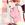

| B s . A A A | full 3/4 1/2 | E E | Light Dark |
|

Istoria
Author of 25 Stories |
Author's note :
I'm still a bit amazed that I've finally gotten to this point of the story. This is the last part of the Diablo game… 31 chapters in all. But it's not quite the end yet.Thanks to all the reviews and to Another Duck for the beta read! I know this chapter has taken a bit longer to get out then the others so thanks for your patience. Enjoy!
Act 5, Quest 6 : Eve of Destruction
Her feet felt like they were touching the cold stone staircase as she made her way down into the darkness. Her eyes were straight ahead, staring into nothingness but not noticing it. Her mind was lost in thought, trying to decipher and understand exactly what had happened, trying to find another explanation…
But there was none. They were dead. All of them.
The sudden appearance of torchlights snapped her out of her revelry. There was no time for remorse or regret. She had to concentrate on the fight ahead.
The Worldstone Keep stretched in front of them as the small trio reached the final steps. The stone walls seemed to be sucking the heat out of the air. This time Akane never felt the cold. She wasn't feeling much of anything anymore.
The walls began to shake and Akane had to grab onto the wall or risk falling down. Ranma turned around to make sure she was okay. She nodded softly but her brow furrowed as the wall began to shake again.
"Is it me or…" she started.
"Yeah," Ranma jumped in. "It's too regular to be natural."
"We should move," Genma said quickly and no one could argue the point.
Swiftly, the three warriors fled down the halls, trying to outrun whatever was chasing them. But the pounding was getting louder and debris was starting to rain down from the walls.
"What is it?" Akane cried.
"I don't want to find out," Ranma replied.
The floor suddenly buckled and they all went tumbling to the ground. Ranma could feel the cuts and scraps form in every place that wasn't covered by armor. He hit the floor and something slipped off his neck.
He watched as his amulet fell to the ground. The tiny shard of Akane's helmet caught the light in the cavern before it embedded itself into the grout of the stone floor. Ranma blinked and looked up, seeing Akane across from him attempting to regain her composure.
Something constricted in his chest. The torchlights flickered out and engulfed the hallway in darkness. His mind could sense it before his body could react. But he tried anyway.
"AKA…"
The floor exploded into a rain of pebbles and Akane, Genma and Ranma were powerless to do anything. A strong wind took Ranma in its arms and bore him down countless passages in the space of a few seconds. It tossed him against the walls before throwing him to the ground and disappearing just as quickly as it had come.
Ranma coughed for a few minutes, fighting to get air back in his lung. His eyes blinked and he realized it was still dark. Struggling towards the nearest wall, his finger sought for grooves there and he used them to slowly pull himself up.
His head hit something and as soon as he had finished cursing it, Ranma realized it was a torch. He patted his pocket and brought out a flint lighter, carefully bringing it up to the still warm head of the torch.
The fire lit up the cavern quickly and Ranma swept it around, looking for traces of anything familiar.
"Akane? Pop!" he called out but there was no answer.
He took a few steps forwards before something caught his eye. Kneeling to the ground, he saw the remnants of a chain with the tiny shard attached.
~ "Good luck!" Akane said, suddenly outstretching her hand. Something came tumbling out of her fingers. Ranma reached forward and slowly grabbed it. "It's a piece of my helmet. It's not going to do me any good but Cologne said it might make a good amulet." ~
His hand closed around the shard and he held it there for a moment. The air was still but the flame of the torch danced with no one. He carefully wrapped the chain around his wrist and secured it as best he could before he set off down the corridor in search of his comrade.
He only got two steps before he found his way blocked.
"So the infamous paladin Ranma Saotome… I have heard much about you from my master. But as soon as I kill you, all he will speak about is me, Lime."
~ Suddenly she was under the water. It was strange how peaceful it was under here. There was no thunder, no rain, no chaos. As the boat began to pull her down, everything started to get dark and Akane found herself being welcomed into the peaceful embrace of the sea. ~
Akane's shot open and she coughed, trying to draw air into her lungs. She was drowning? No, no that was a long time ago. And there was no water here. She looked around and realized it was very dark.
She lifted an arm above her head and cast a simple fireball, trying to keep in place until she could see a torch. The room lit up as several torches caught fire by the passing fireball. Akane blinked again and realized she was lying on the floor of a hallway.
Sitting up, she found her wand close to her and clutched it quickly to her body.
"Ranma? Mr. Saotome?"
But there was no answer. She was completely alone.
She took a few steps down the hall and came quickly to a stop, hearing them echo down the passageway. Her skin began to crawl as they did and she had to suppress the urge to run.
She took two more steps.
Three echoed down the hall.
Akane spun around, bringing her wand parallel to the floor as a fireball flared up on its end. But what she saw there made her stop.
"No…" she said softly.
"Do you remember me?" The creature smiled. "I gave you the greatest gift but you tossed it away."
Akane tried to keep her hand straight but it was shaking. "It wasn't a gift. It was a curse. Now stay back. I'm not the same little sorceress you knew back then."
Herb smiled, watching the wand bob up and down. "And I'm not as giving as I was. Now it's time for payback."
Genma never lost consciousness or his breath. He had felt the wind hit him like a full force hurricane and instinctively he had held his breath. He landed on his feet as the wind deposited him twenty right turns and ten left turns later. And he remembered the order.
Amateurs, he thought starting to make his way back the way he had came. Ranma would do the same, if he had managed to teach the boy anything… Genma sighed. No, they were probably both completely lost.
"My, my, I am the lucky one this time."
The torches caught fire and Genma squinted under the glare. There was man standing there, not very tall but something was very wrong about his presence.
"Lucky that I'll finish you off quickly," Genma said, bringing his mind into a state of preparation.
"My comrades have the misfortune of disposing of your two little underlings. But I, Mint, have a master level Druid to play with. You will change into a wolf, wont you? I would like to have your fur as a trophy."
Genma shook his head, his eyes slowly turning lupine as his hands began to stretch and grow. "You demons think too highly of yourselves," he said, the last bit of the sentence degenerating into a growl.
Three ravens, two wolves and a grizzly bear suddenly appeared next to him. For a moment, Genma wondered if maybe he hadn't overdone it. This Mint was just standing there watching them. Maybe what he felt was wrong, maybe all Mint was an ordinary man.
The air shifted and Genma crouched low. Around him, space seemed to warp around Mint and the air got significantly warmer. The ground opened up and the flames of Hell engulfed the other man's body.
A second later a demon more terrifying then any nightmare stood in front of Genma. Its fists uncurled revealing razor sharp claws. It turned to face him, its face breaking into a smile and showing the deadly fangs that were hiding behind the rotting skin.
Genma stood up and nodded. So this was going to be a real fight after all.
Ranma dodged quickly, flipping backwards into the air and barely avoiding the slash of claws as it came right at him. His sword came up and his slashed against the attack. But all he got was a flare of sparks.
The sword wasn't doing anything. The monster's physical resistance was too high.
~ "You failed because you only think with the sword! It's not enough." ~
Ranma shook the memory out of his head, but the harsh sting of his father's words was still there. Hadn't he proven that he could do more than fight with a sword? Lately he could attack creatures with more than just weapons and auras.
Lime's attack destroyed the ground inches from where he was. Ranma tried to muster the concentration to cast a spell but Lime's attacks were too rapid. There was barely a chance to breathe let alone chant incantations.
Lime moved quickly and Ranma brought up his shield, knowing he would never get away in time. The impact was immense and the young paladin went spinning into the wall, the last remnants of his shield shattering against the stones as he did.
Lime began to laugh and flexed his clawed hand. Ranma shook his head to get back his concentration. His shield was gone and his sword hung limply in his hand.
"Giving up already?"
Ranma didn't move. Lime had stopped moving long enough for Ranma to get a good picture of his opponent. His hands and legs were completely armored but his chest… there was a bit of flesh peeking out behind the defenses.
"Don't even think about it," Lime said following Ranma's eyes. The demon reared up for another attack and Ranma knew he was finished unless he could find some way to defend himself.
He had to find a way! He couldn't die here, not before he found Akane and Pop and knew they were safe.
He felt something warm against his hand and looked down. The little amulet was glowing and slowly heating up his hand. If Ranma strained his ears, he could almost make out the sound of singing.
No! It wasn't singing it was an incantation… for Holy Shield! Ranma started to repeat it quickly and the shard of helmet flared and grew, blocking Ranma from Lime's approaching jaws.
The creature wheeled backwards screaming in pain as blood spurted from him mouth and broken fangs hit the ground. Ranma didn't waste a moment. He lunged forward with his sword and hit right in the tender spot of Lime's chest.
The demon let out one more horrified yell before it fell to the ground. Ranma was heaving, the large shield at his side still glowing. Carefully, he pulled his sword out of the carcass and stepped back.
He waited for the shield to return to its normal size but it didn't happen. What the heck was going on here?
"You have to understand that a majority of our class' strength does not come from within. We must rely not just on ourselves but on our faith. Faith in the people around us and faith in the good of this world."
Ranma blinked as he remembered the Paladin's words. The shield… it was from Akane's shard. And she and his father were on Ranma's mind right before he heard the spell.
It made sense now! He could master this class!
But first, he needed to find the other two.
"Get away from me," Akane hissed, pushing Herb back towards the other side of the wall.
Herb smiled. "Are we afraid?"
"Stop playing with me!" Akane yelled. "I know what you did to Ryoga and Kuno. This can't be your true form!"
Herb watched her. "What? You want my true form? I would kill you before you could cast your first spell. But if you move quick enough, you might be able to singed me when I am still in human form… maybe even kill me."
Akane's breathing increased as her grip on the wand did. She looked at him and shook his head. "Is this another gift, then?" she said. "I know your gifts always have a price." Her words echoed in the cave and Akane suddenly felt surer of herself. "I won't take the easy road again. My power is my own," she said, the red glow suddenly growing around her. "And I'll defeat you in your true demon form."
Herb smiled and bowed. The skin in his back began to stretch and tear as the demon within him grew. Any normal person would have been terrified by the display, but Akane was different. And her eyes were glowing red as he turned to face her.
Herb didn't waste a minute and attacked, claws and jaws lashing forward just as Akane cast Inferno into the gaping mouth. The demon peeled backwards and slithered around the wall rounding for another pass.
Akane waited patiently, prepping her next attack. Herb was fast and body snapped forward, aiming at her with a tremendous speed. But Akane never wavered. And at the last moment, a Fire Wall sprung up to block his attack. Quickly Akane cast three more, trapping the beast in a box of fire. She would only have a few spare seconds before they went out.
Meteor's incantation left her lips and Akane spared a look at the trapped demon before it was destroyed. If she hadn't known any better… she would have sworn it was smiling.
Demon parts littered the area. The carcass of a wolf flickered out of existence as it finally succumbed to injury. It was a massacre and as light began filtering into the cavern, it became hard to tell who had won the fight.
Her white wings folded against her back, the angel slowly waded her way though the carnage to reach the man slumped against the wall. It was clear that he was very badly injured. Multiple wounds bled on the ground. His face had been bruised and shredded beyond recognition…that was to anyone but her.
"Oh, Genma… what did you do now?"
Genma shifted a bit, forcing one of his swollen eyes to open just a bit. It snapped shut in the radiance that surrounded the angel.
"If… I didn't know…" But his mouth was missing too many teeth to make much sense.
"Shhh…" Nodoka said, placing a finger on his lip. "It is me."
"You… dead."
"Yes," she replied. "But not gone. I have a new position now. I'm helping Tendo-san with her work… as an angel."
Genma's lips twitched. "Lied… to…"
"Yes, I did lie," Nodoka said placing her hands on her hips. "But you deserved it! I waited but you never came. I never once got to see my boy grown up with human eyes!"
"Good… boy…"
"He is a good boy. And he's going to need help."
Genma shifted as if trying to stand up but half his body would not respond to his command.
"Not you," Nodoka said. "I'm afraid that was your last fight."
Genma head tilted in a nod. "…take… to… Hell?"
Nodoka smiled. "As much as you deserve it… that's not what you are destined for. Rest Genma, go with your friends. I will see you soon."
She reached out and slowly made to cover his eyes. But with his last bit of strength reached up and took her arm.
"…sorry…"
"There is no reason to worry."
Kodachi spun on her feet. "There should be someone else here."
"You will be enough."
Kodachi spun to face the throne. "Mousse should have been here. That was the plan, five to face them at the end."
The figure there shook his head. "It was not in my control."
"Nothing is in your control," Kodachi hissed. "This whole war is falling apart on you. The Army of Light is pushing us back and you still haven't figured out how to use the Worldstone! How could I not wo…"
"I would be careful with what you say. Oblivion is a place I can reintroduce you to if I so desire."
Kodachi turned to him with anger. "I will follow your commands," she said.
"Then be ready. They're here."
The doors at opposite ends of the throne room flew open. Ranma and Akane stumbling in and looked around for a moment before catching the other's eye.
"Akane!" Ranma called. "I was looking for you!"
"I was looking for you too!" she said, her face suddenly breaking out into a smile. "Are you okay?"
"Yeah," he said, as if it was a silly question. "Where's pop?"
"Dead." Ranma and Akane turned and watched as Kodachi strolled towards them. "Don't worry, little girl," she said looking at Akane. "I'll send you to meet him soon."
"Don't you ever die?" Akane asked, pulling her wand around. "Ranma… let me enchant your sword and… Ranma?"
But Ranma wasn't looking at Akane or Kodachi. His eyes were locked on whatever was on the throne. It hadn't spoken to him but somehow Ranma knew. This was the final brother, this was the last obstacle to peace.
Ranma strode forward but Kodachi moved quickly and struck at him, sending him back. The air crackled with electricity as she prepared a lightning strike. Ranma brought his shield above his head and knelt to ground. The full force of the spell hit him but the shield protected him from its magical effects.
Kodachi didn't seem too pleased. She prepared another attack but the floor below her erupted into flames and she had to move backwards.
"I'll kill you," Kodachi said. "Both of you."
"So much for love," Ranma said, unsheathing his sword.
Kodachi smiled. "I'll still have you… even if it's slightly charred."
"There are so many things wrong with that, I'm not even gonna reply," Ranma said as he charged. His sword flared red as Akane cast Enchant. A wall of fire sprung up behind Kodachi to block her retreat. Kodachi snarled unhappily.
"So you are serious," she said, moving quickly to the left as he struck with his sword. "Are you upset about your father? That his body was torn to shred by my comrade?"
"You're lying," Ranma said swinging the sword around for another pass. "That old bastard would never let himself get killed by one of your kind."
Kodachi's hand snapped forward and she caught him at the neck. "No? Well, I'll have to prove it to you."
Her hand snapped out and claws appeared, laced with poison. She came forward for the strike but something hit her side and the wind was knocked out of her. Akane pulled back her wand and stepped away as Kodachi dropped Ranma and staggered about.
"NOW!" she yelled.
Ranma took his sword and lunged forward embedding the blade in her chest. Kodachi looked at him surprised. "But… Ranma-sama…"
He shook his head and pulled the blade out of it, letting her body fall to floor and evaporate into electrical energy. Ranma took in a deep breath and looked up. Akane nodded at him and started to walk towards him but was stopped by the strange noise filling the cavern.
Clapping.
"Good job. Good job."
The creature shifted on the throne and stood up, his golden wings unfolded into the room as his long hair tumbled down. "I must say, I have never been impressed by your pathetic race but you may have been able to change my opinion. If you weren't doomed to die by my hand now."
Ranma and Akane spared each other a glance before preparing for a fight. The ground below him shifted and a portal appeared, dropping the demon to the second level of the chamber. The portal continued forward and the entire floor disappeared, sending the two remaining fighters down into the cavern underneath.
Even under such dire circumstance, neither of them could not marvel at the beauty of the Worldstone. It encompassed most of the back wall of the massive cavern, shining brilliantly and shifting colors so that it was just a blurry rainbow in the end.
Akane and Ranma stood up, finding themselves separated by several feet. They tried to rejoin as a party but something crashed in between them and forced them back. Looking over, they watched as the once attractive man morphed into the demon king he truly was.
Saffron's voice roared against the cavern and even the Worldstone shook at his cry. This was no ordinary monster… this was something worse than they had ever had to deal with. And there were only two of them left.
Ranma headed towards the obstacle blocking his path, determined to get to Akane before the demon could attack them separately. The only problem was that the obstacle turned out to be one of the demon's appendages and as Ranma reached to vault over it, it casually swept him aside and towards the edge of a cliff.
Ranma skidded to a stop just before he pitched over the side and found himself staring down into a bubbling sea of lava. The demon turned and snarled at him, preparing for the next attack.
Akane watched from the other end, completely horrified. No! She had to do something! She couldn't lose him too!
She brought her wand up and prepared a spell but found she couldn't muster the concentration. All she could think of was Ukyo, Ryoga and Shampoo's pale faces as they lay in the snow. They were dead. And now Ranma was going to be too.
Her mind flooded with memories of their trip. The way he constantly picked on her or was oblivious to way his action with the other girls hurt her. He was a pervert. An idiot. Besides…
~ Do you know what it feels like to realize you can be that easily replaced in someone's life? ~
There was the incident with the doll. She had to hate him for that.
But then there was the Rouge's forest and how he came to save her. The desert maze where he had rescued her. Kurast, where he had found her about to be eaten by Flayers. And yes, it may have been annoying at the time to be rescued by that egotistical jerk. But... she had been grateful.
The way he had stuck by her when she had screwed up and used Herb's spell and almost killed them all. Or when he had stopped by to give her support before she took Happosai's potion to cure that curse… that had made her feel relieved.
But it wasn't just his valiant heroics or his kindness towards her that made her waver against her natural inclination to run. In the end, it was the same reason she had wanted to hate him that brought her to a stand still.
~ "I'm sorry we didn't realize it was you in Lut Gholeim. She was there, she looked like you but you're right she didn't act like you. And I had a feeling that it wasn't you but I thought it was just because… because…" ~
It wasn't the apology itself but what was written on his face that made her realize that he might have been afraid of losing her. They had felt the same way. And if things hadn't gone south quickly after that maybe they would have had a chance to work it out. And then the endless battles, the never ending supply of monsters…
She was going to have to give them a chance to work it out now.
The wand came up and heat began to radiate off it. Akane's eyes turned red and the ground around her began to lift under the power her spell. She was calling Fire Mastery, pulling up her power until she could get it full strength. But would it be enough?
Something moved next to her but Akane felt no fear. A hand reached forward and lay onto of hers, lightning dancing around the wand as the woman came next to her. To her left the air grew cold and Akane watched as another hand grabbed the wand.
She looked forward, watching as Saffron turned towards the immense power that was amassing across the room. Three women, though two were barely visible, were drawing upon their mastery of the three elements.
Saffron dove forward to try to stave of the impending attack but Akane's wand exploded into light and shot forward, piercing him through the chest and shattered the demon to pieces.
She fell to the ground, winded but otherwise fine. She had no mana left but Saffron had been defeated. Akane smiled and looked up, catching Ranma's eye and getting read to return his celebratory look.
But it wasn't there. All that was there was fear.
Akane watched as he started to call out her name. She turned but only got half way around when it hit her. She got a glimpse of Saffron as he speared her through the chest with a Cold Wave. Somehow, he had managed to double himself… and Akane hadn't realized until it was too late.
The Cold Wave hit her and Akane could feel any remnants of Warmth being stripped away. It seeped into her body and froze everything in place, until it finally reached her heart. Saffron watched her drop to the ground with indifference.
The entire time it was happening, Ranma didn't move. It was like a dream to him, watching her get caught up in the cold. It had to be a dream. He ran up and pulled Akane away before Saffron could strike again. He pulled out a potion and brought it to her lips.
"Akane, you need to drink this," he said. "Akane, wake up and drink this…"
"There aren't enough potions in the world to save her," Saffron said as he rounded his way opposite of Ranma.
Ranma didn't look up. "Akane… wake up," he said shaking her a bit. "Just wake up and…"
~ "Are you scared, Ranma?" ~
"Akane, please just wake up," he said, suddenly getting very worried. He didn't understand. Why wasn't she moving?
~ "I wasn't really scared of the fight. I was more scared of… well… It's stupid, forget it." ~
"Akane?" he asked, noticing the she wasn't moving at all, not even to breathe.
~ "I'm scared of losing them… of losing you." ~
"AKANE!" he cried, bringing her close to his chest and holding her there.
Saffron roared and shot forward, preparing another Cold Wave. But the light of the spell forming around Ranma blinded him from what was happening.
Ranma wasn't yelling her name anymore. His eyes were clamped shut trying to block out the image of her, his lips moving in a silent incantation, the final thing the Paladin had taught him. The ceiling opened and light poured into the WorldStone cavern. Saffron looked up, just in time to see the light solidifying into something. Something headed straight for him.
Fist of Heaven hit and Saffron was at the epicenter of its impact. Having just cast a spell, he had no chance to try to double himself again. Instead, he was left to watch as the entire wrath of Heaven came smashing into him. His body exploded into light but Ranma never noticed. He couldn't open his eyes to see her again. So peaceful and yet…
The light of Fist of Heaven began to fade but was quickly replaced by other sources of celestial light.
"Ranma?"
Ranma shook his head and turned away.
"Ranma, please look at me."
"No!" Ranma said. "I know who you are. You're here to take her away."
Akane's mother sighed and looked over at Nodoka. The other woman leaned down and took Ranma's arm in hers.
"Ranma," Nodoka said softly.
Ranma blinked and looked up, trying to take in the other woman's face. "You're familiar…"
Nodoka smiled sadly. "I'm glad you remember. It's been such a long time."
"Mom?" he said. And she nodded. He paused and looked at Akane and then at her. "You can do something right?"
Nodoka's face crumpled sadly. "I can't change what happened Ranma. I'm sorry."
"No," he said turning away. "She can't be dead. It's not fair. Not when… not when I never got to tell her." He paused and looked down at Akane. "Why are you here?"
"The Worldstone has been tainted," Nodoka said.
"And we have to destroy it," the other angel said. "Before it breaches the thin line between this world and Hell."
"What will happen when you do?" he asked softly.
"We don't know," Nodoka said.
"Perhaps the world will be destroyed anyway. Perhaps it will be reset, thrown back to a state that it was in before the three brothers attempted to destroy it. It might make life easier or it might make it a living nightmare or a vision of hell."
"You need to leave here before that happens," Nodoka said, a red portal appearing next to her.
Ranma looked at the portal and the women and then back at Akane. He knew he couldn't stay, no matter how much it hurt to continue on. He took her body in his arms and nodded, walking through the portal and disappearing.
The two angels turned to each other. "I wish… I wish they didn't have to go through this," Nodoka said. The other angel nodded slightly.
"What do you think will happen when we destroy it?" Nodoka asked.
"There's only one way to find out."
The two angels spared one last glance at each other before they took off headed for the crystal. Their flight was a true as Shampoo's arrow. They struck the stone simultaneously, their swords piercing through the hard exterior and shattering the stone at its core.
The Worldstone exploded and the cavern began to collapse onto itself. No one was left inside to see the damage, however, or to watch as the world began to change.

|
Review this Chapter |